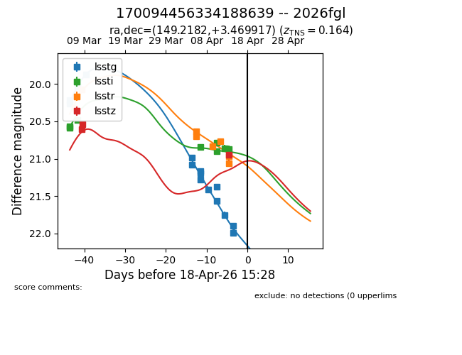
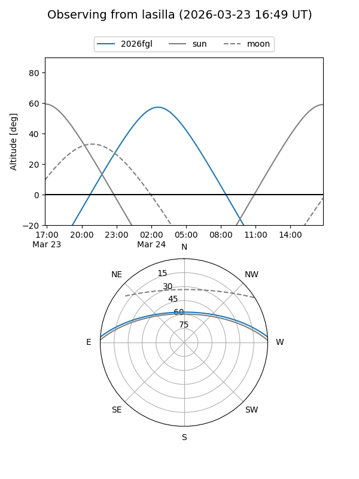
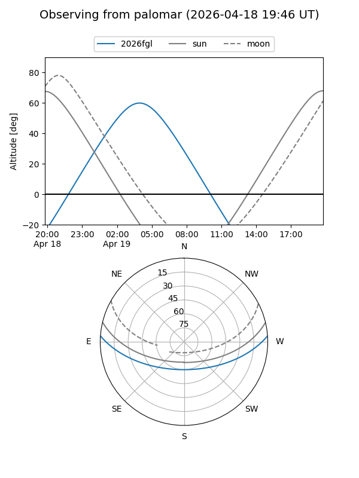
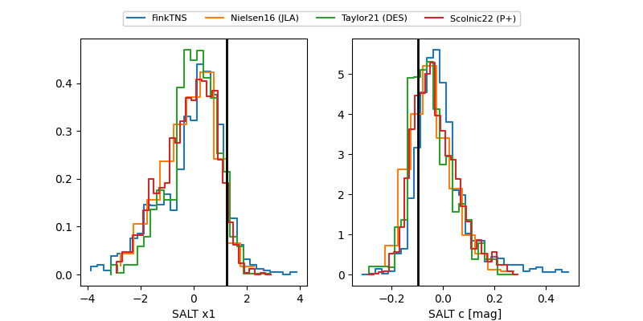

2026fgl
Target 2026fgl at 2026-04-18 15:32
Aliases and brokers:
TNS: link
YSE: link
alt names
170094456334188639 (lsst,fink_lsst)
2026fgl (tns,yse)
Coordinates:
equatorial (ra, dec) = 149.2182,+3.46992
equatorial (HMS+DMS) = 09:56:52.36,+03:28:11.70
galactic (l, b) = (234.7306,+42.10405)
Flags:
Photometry:
last lsstg=21.90, lssti=20.87, lsstr=21.06, lsstz=20.95
16 lsstg, 8 lssti, 8 lsstr, 3 lsstz detections
Lightcurve

Visibility


Additional plots
